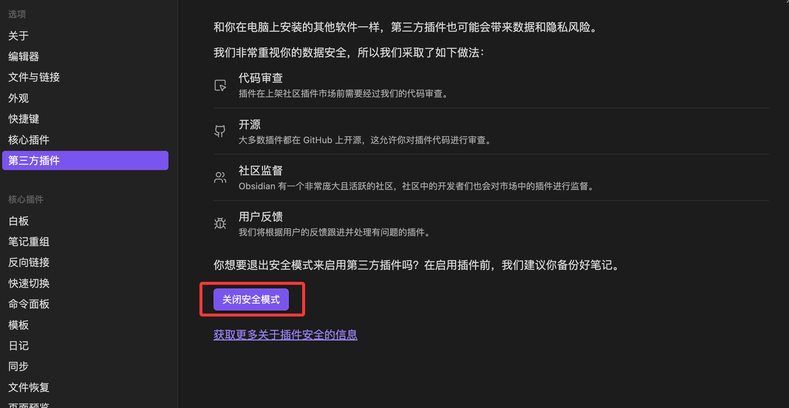
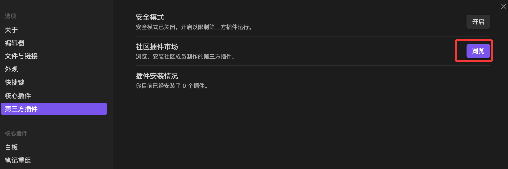
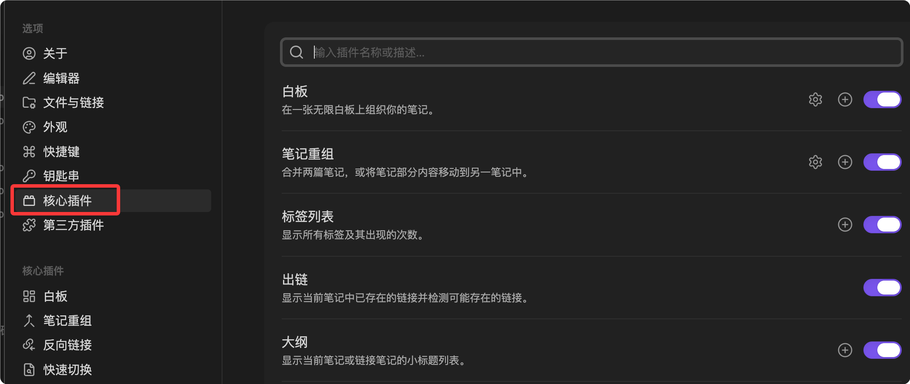

Obsidian Plugins
Much of Obsidian's power comes from its plugin marketplace.
Plugins allow users to extend Obsidian from a basic Markdown editor into a Swiss Army knife with unlimited functionality, according to their needs.
Obsidian plugins fall into two main categories:Core Plugins和Community Plugins, which can be enabled and viewed in Settings.

1. Core Plugins
- Definition:These are officially maintained functional modules bundled with Obsidian. They are installed by default in every Obsidian instance, but can be enabled or disabled as needed.
- Purpose:Provides the basic and important features of the software, such asbidirectional links、graph view、daily notes、templates、tag paneletc.
- Examples:
- Daily Notes:Quickly create and jump to the current day's note, perfect for daily logs or task tracking.
- Canvas:Allows you to freely arrange notes, images, and web pages on an infinite whiteboard for visual thinking organization.
- Templates:Allows you to define reusable note structures (e.g., book notes, meeting minutes) to improve efficiency.
2. Third-party Plugins
- Definition:These are third-party feature extensions created, maintained, and shared by Obsidian users (developers) worldwide.
- Characteristics:They are numerous and varied in function, greatly enriching the Obsidian ecosystem.
- Security:Before installing third-party plugins, Obsidian enables Safe Mode by default.Safe Mode. Installing plugins requires manually turning off Safe Mode. Obsidian will warn users about security risks (it is recommended to install only plugins with high download counts, high ratings, and clear functionality).
For beginner users, here are some of the most popular, powerful third-party plugins that can quickly improve your experience:
| Plugin Name | Main Function | Typical Use Cases |
|---|---|---|
| Dataview | Treats your vault as a database, using code to query and display data. | Automatically generates task lists, aggregates all projects or book lists with a specific tag. |
| Excalidraw | Creates hand-drawn-style diagrams and mind maps in Obsidian. | Create flowcharts, concept sketches, or handwritten annotations. |
| Calendar | Displays a calendar view in the right sidebar. | Quickly view and jump to past daily notes for schedule reviews. |
| Advanced Tables | Simplifies creating and formatting Markdown tables. | Easily align and edit complex tables without manually adjusting spaces. |
| Kanban | Creates a Trello- or Notion-like Kanban view in Obsidian. | Task management, project progress tracking, or dragging ideas from "To Do" to "Done". |
| Obsidian Git | Automatically backs up your vault to a Git repository (e.g., GitHub). | Enables version control and multi-device sync, providing extra security. |
How to Install and Manage Plugins
1. Enter plugin settings
- Click the"Settings"(gear icon)
- In the sidebar, find"Core Plugins" 和 "Third-party Plugins"。
2. Steps to install third-party plugins
- Go to"Third-party creation"tab.
- Turn off Safe Mode:Obsidian will prompt you to do this.
- Click"Browse"。
- Enter the plugin name in the search box (e.g.,
Dataview）。 - Click the plugin, then click"Install"。
- Activate the plugin:After installation completes, click"Enable"button. Only then will the plugin start working.



Tip:After a plugin is installed, you can usually access it from the left sidebar, right sidebar, or through theCommand Palette (
Ctrl/Cmd + P) to invoke its functions.
Obsidian Core Plugins
Obsidian includes more than ten core plugins. By default, some are enabled, while others need to be manually enabled.

Daily Notes: Daily Notes
Daily Notes is a core plugin for journaling. It gives you a fixed note every day for recording, planning, or reflection.
Enable and Configure
In Settings → Core Plugins, enable "Daily Notes".
Key configuration options:
| Option | Recommended Value | Description |
|---|---|---|
| Date Format | YYYY-MM-DD | e.g., 2026-05-21, naturally sorted by file name |
| Default folder for new daily notes | 00-Daily | Separate from regular notes for easier management |
| Template file location | Templates/Daily Note Template | Specify the template for daily notes |
Daily Note Template Design
Example
tags:
- Daily Notes
created: {{date}}
---
# {{date}} Daily Note
## Today's Goals
- [ ] Goal 1
- [ ] Goal 2
- [ ] Goal 3
## Notes & Ideas
## Today's Summary
### What Went Well
### What Can Be Improved
### Plan for Tomorrow
Quick Actions
Click the calendar icon in the left sidebar, or search for "Daily Notes: Open today's daily note" in the Command Palette.
Obsidian will automatically create the daily note file for the current day in the specified folder.
You can also set"Open today's daily note on startup", making the Daily Note your default entry point.
Canvas: Infinite Whiteboard
Canvas is Obsidian's built-in infinite canvas tool that uses cards and connections to organize thoughts, plan projects, and draw diagrams.
Create a Canvas
Right-click in the file list and select "New Canvas", or search for "Canvas" in the Command Palette.
Canvas files are stored with the.canvas.canvas extension, and are essentially JSON files that can be viewed and edited with a text editor.
Adding Cards
Double-click an empty area in the Canvas to create a card, or drag in the following content:
- Markdown note files (linked cards are created automatically)
- Images (display immediately when dragged in)
- Web links (embedded cards are created automatically)
Connections and Grouping
When you hover over the edge of a card, connection points appear; drag to another card to create a connection line.
Connections can have text labels (e.g., "depends on", "causes", "references"), and you can choose the color and line style.
After selecting multiple cards with a selection box, right-click and choose "Create Group" to add a background color and title to them.
Use Cases
| Scenario | Usage |
|---|---|
| Brainstorming | Freely create cards and use connections to express relationships between ideas |
| Project Planning | Task cards + dependency connections + groups to represent phases, providing an intuitive view of the whole project |
| Knowledge Map | Drag core concept notes into the Canvas and use connections to show citation relationships between concepts |
| Writing Outline | Each card is a key point of a chapter; drag to sort, and lines represent logical relationships. |
Canvas is different from the graph: the graph is automatically generated by Obsidian based on your bidirectional links, while Canvas is actively laid out by you manually. The former is discovery, the latter is planning.
Outline: Outline Panel
The Outline plugin displays the heading tree of the current document in the right sidebar.
Core features
- Automatically parses the# ## ###headings in the document and generates a hierarchical tree
- Click a heading to quickly jump to the corresponding position in the document
- The heading you are currently reading is highlighted
- Drag headings to rearrange chapter order in the document
The Outline panel is especially useful for navigating long documents—when you have a 3,000-word study note, you no longer need to manually scroll to find a certain section.
Backlinks and Outgoing Links
These two panels are the core UI presentation of the bidirectional link feature.
Backlinks
Displayswhich notes link to the current note。
Each backlink shows the context where the link appears (a few lines before and after), letting you judge the related content without jumping.
Expand each backlink to see more context, or even directly expand the full content of that note.
Outgoing Links
Displayswhich other notes the current note links to。
Corresponding to Backlinks, it displays the list of external notes that the current note points to.
Using the two panels together gives you a complete understanding of a note's position in the knowledge network—who cites it, and who it cites.
Panel filtering
Both panels have a search filter box at the top; enter a keyword to quickly filter:
- Filter by path: only show backlinks within a specific folder
- Filter by keyword: only show backlinks containing specific text
Graph View Advanced
Basic graph features were introduced in an earlier chapter; here we go deeper into configuration tips.
Creating Meaningful Groups
In the global graph settings, click "New group" and use query syntax to define grouping rules:
Example: Group by Folder
path: programming/
# Diary → gray
path: 00-diary/
# Notes to improve → red
tag:#Status/Draft
Depth control
The "Depth" setting in the graph determines how many levels of link relationships are displayed:
- Depth 1: only shows the direct neighbors of the current note
- Depth 2: shows neighbors of neighbors
- Depth -1: shows all associations
It is recommended to use depth 1-2 during active work to keep the graph clear, and use depth -1 during review and reflection to discover distant associations.
Centering force and repulsion
Adjusting the graph's physics parameters:
- Centering force: after increasing, related nodes become more clustered
- Repulsion: after increasing, the distance between nodes becomes larger
- Link force: after increasing, connections become shorter and linked nodes become closer
You don't need to look at the graph every day. Its most valuable moments are: after writing a batch of new notes, observe which areas have become denser; or when you discover an isolated node, think about which existing knowledge system it should connect to.
Workspaces: Workspace Layout
Different tasks require different panel layouts.
When writing, you may want to collapse all sidebars and leave only the editing area; when organizing notes, you need the file list and tag panel to be visible at the same time.
Saving a workspace
After adjusting the panel layout, click "Manage workspaces" in the "Workspaces" panel in the left sidebar, enter a name, and save the current layout.
Switching workspaces
Click a saved layout in the Workspaces panel to switch with one click.
You can also switch by pressing Cmd+P and searching for "Workspaces: Load workspace".
Recommended workspace layouts
| Workspace | Layout |
|---|---|
| Writing mode | Close all sidebars, leaving only the editing area, to focus on content output |
| Organizing mode | Left: file list + tag panel; right: Outline + Backlinks |
| Research mode | Left: search results; middle: main note + Canvas; right: Backlinks + Outline |
| Review mode | Left: bookmarks; middle: daily notes + global graph; right: Backlinks |
Core Plugins Enablement Checklist
To summarize, it is recommended that all users enable at least the following core plugins:
| Plugin | Reason |
|---|---|
| Daily Notes | The entry point for building a daily recording habit |
| Templates | Unify note structure and reduce repetitive work |
| Outline | Essential for long-document navigation |
| Backlinks | The core UI of the bidirectional link feature; not enabling it wastes the bidirectional links |
| Outgoing Links | See which notes the current note references |
| Bookmarks | Quick access to frequently used notes and search criteria |
| Workspaces | Switch between different working modes |
Click to Share Notes
<p style="font-size:14px;">The note must be an expansion of this article's content!</p><br> <p style="font-size:12px;"><a href="../tougao.html" target="_blank">To submit an article, click here</a></p> <p style="font-size:14px;"><a href="../w3cnote/runoob-user-test-intro.html" target="_blank">How to get a registration invitation code</a></p> <h3 class="text-muted"><i class="fa fa-info-circle" aria-hidden="true"></i> You must <a href=";.html" class="runoob-pop">log in</a> before sharing a note!</h3> <p><a href="../w3cnote/runoob-user-test-intro.html" target="_blank">How to get a registration invitation code</a></p>